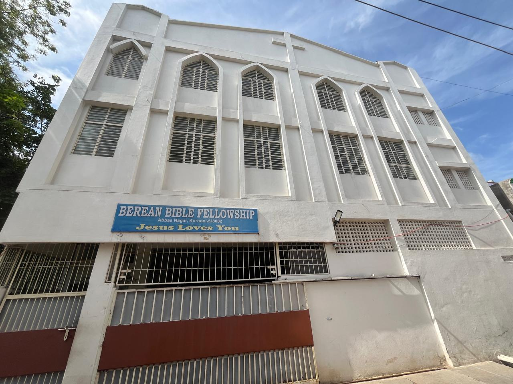

Beautiful exterior of Bethel Bible Church
Berean Fellowship
Berean Bible Fellowship
"Building Hope, Sharing Faith, Changing Lives"

Welcoming exterior of Berean Bible Fellowship

Peaceful interior sanctuary for fellowship
About Us
Berean Bible Fellowship is a vibrant community of believers committed to sharing the hope and love of Jesus Christ. We focus on family values, personal growth, and making disciples who make a difference in the world.
Our vision is to be a church that brings hope to the hopeless and demonstrates God's love through practical actions. Our welcoming sanctuary serves as a place of refuge, worship, and spiritual nourishment for all who enter.
Our Fellowship
At Berean Bible Fellowship, we believe in the power of community. Our warm and inviting interior creates an atmosphere where families can grow together in faith, children can learn about God's love, and individuals can find their spiritual home.
Service Times
Sunday Morning
8:30 AM & 10:30 AM
Tuesday Prayer
7:00 PM
Friday Youth
7:30 PM
Location
456 Hope Avenue
Riverside, RV 67890
Family Focus
Programs and ministries designed to strengthen family bonds.
Faith Formation
Comprehensive Bible teaching for all ages and stages of faith.
Community Impact
Active involvement in local community service and outreach.
Care Ministry
Supporting members through life's challenges with love and care.